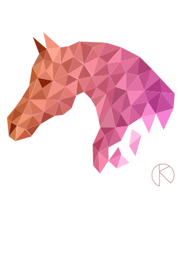
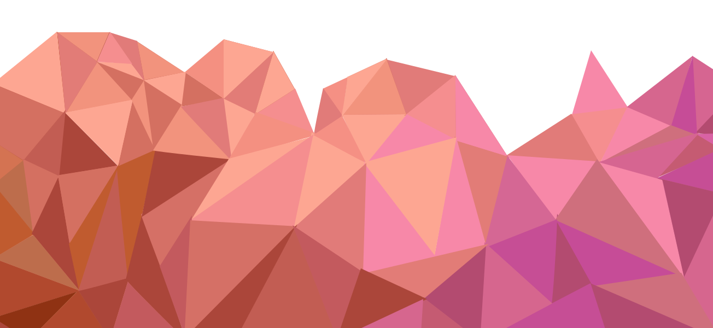
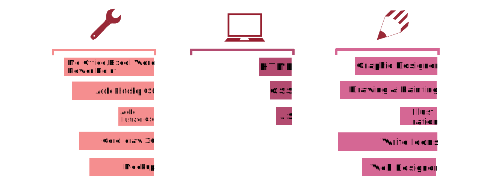

HOME
ABOUT ME
SKILLS
WORK
CONTACT ME

Graphic Designer
Web Developer

About Me ↓
Name Olena Konyk
Birthplace Lviv, Ukraine Birtday May 31, 1993 Language Ukrainian Address 79017 Lviv St.Karpatska 6 apt. 6 Ukraine
Experiance
Intern Malteser International Ukraine [August 15-November 20, 2015] Assistant Paintings Conservator [June 15-September 20, 2015] Intern at art school by O. Novakivsky [March 1-May 1, 2013]
Education
Masters degree [September 2014-december 2015] Ukrainian academy of printing, the department of graphic design. Lviv, Ukraine Bachelor degree [September 2008-May 2014] Lviv state collage of decorative and applied art by I. Trush, the department of art conservation. Lviv, Ukraine.
Short-term training program
Conference of the Arts [May 20-22, 2015] English course level B2 [October 9, 2014- April7,2015]
Voluntiring
Volunteer at church Arts [August 1- September 30, 2015] Toronto, Canada
"No army can stop an idea whose time has come".
Skills
